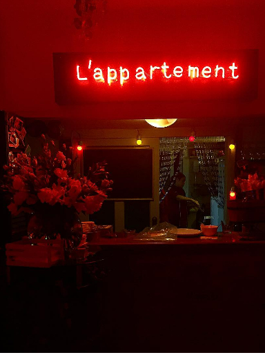

Bistrot Bar Concept
Achrafieh - Sioufi
Beyrouth - Liban
-

- L’Appartement, un lieu multifonctionnel comprenant à la fois une chambre d’hôte, une salle de danse, un bistrot, une galerie d’art et une salle polyvalente, a ouvert fin octobre à Sioufi. Situé dans un immeuble résidentiel, l’espace de 200 m2 a été conçu « comme une maison, afin que les clients s’y sentent à l’aise, dans une ambiance qui favorise l’intimité ».
- Cinq ans après l’ouverture du bistrot-resto l’Appartement, Karim et Carla Keirouz poursuivent l’aventure à quelques centaines de mètres, dans une petite maison avec jardin. « On a tenu à rester dans le même quartier et à préserver la même ambiance, c’est un lieu chaleureux et intimiste », explique Carla. La nouvelle maison peut accueillir une cinquantaine de personnes à l’intérieur et offre surtout 400 mètres carrés de jardin avec de grands arbres. On peut y manger, boire un verre, faire un jeu de société ou écouter de la musique.